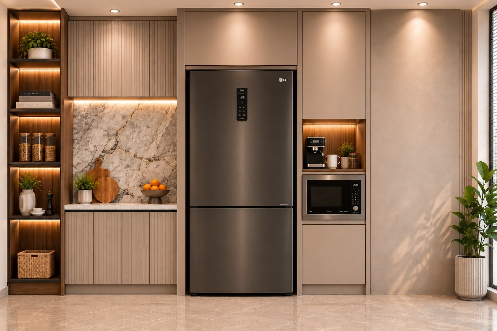
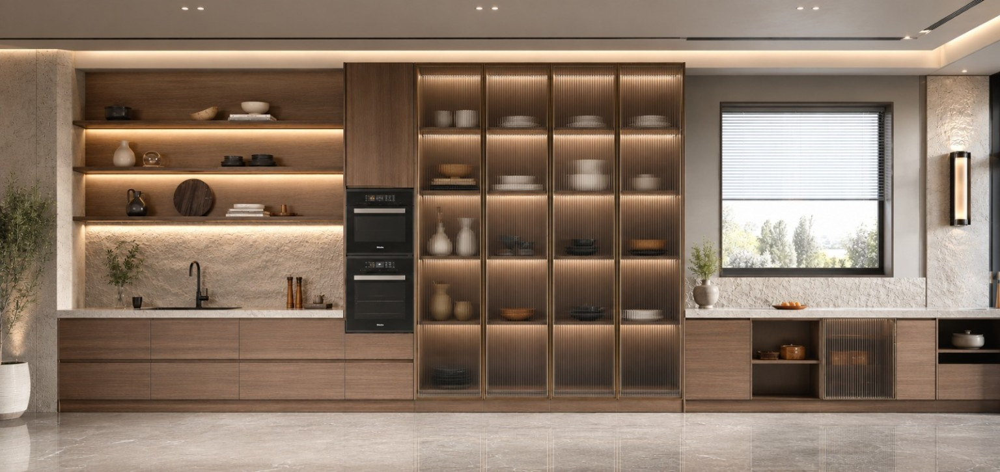
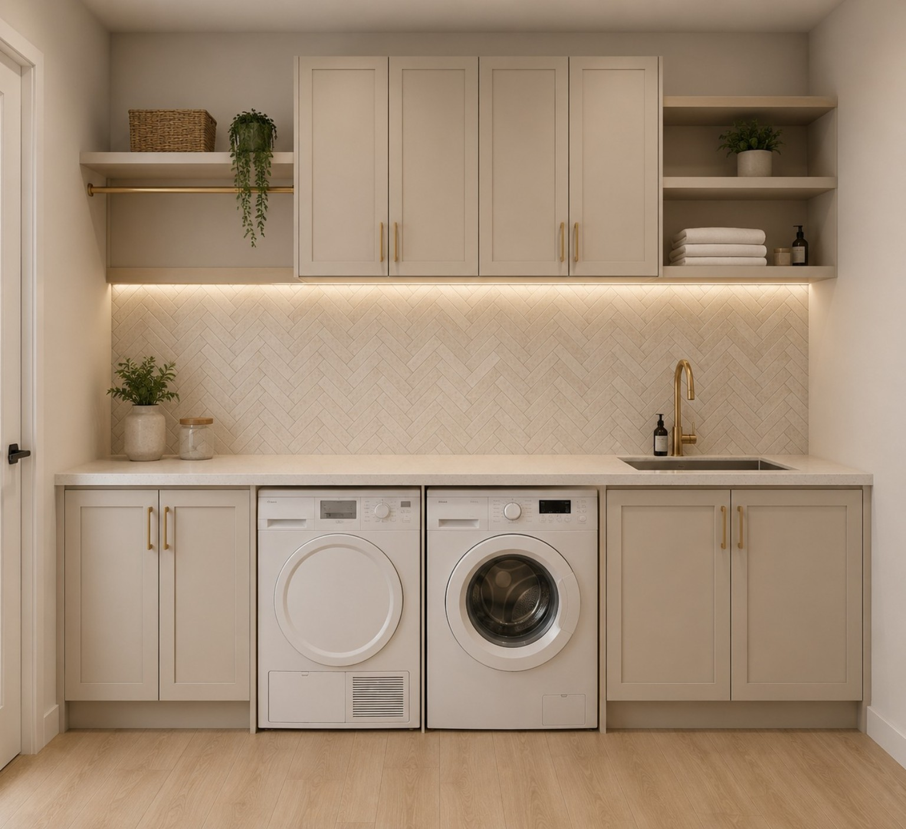
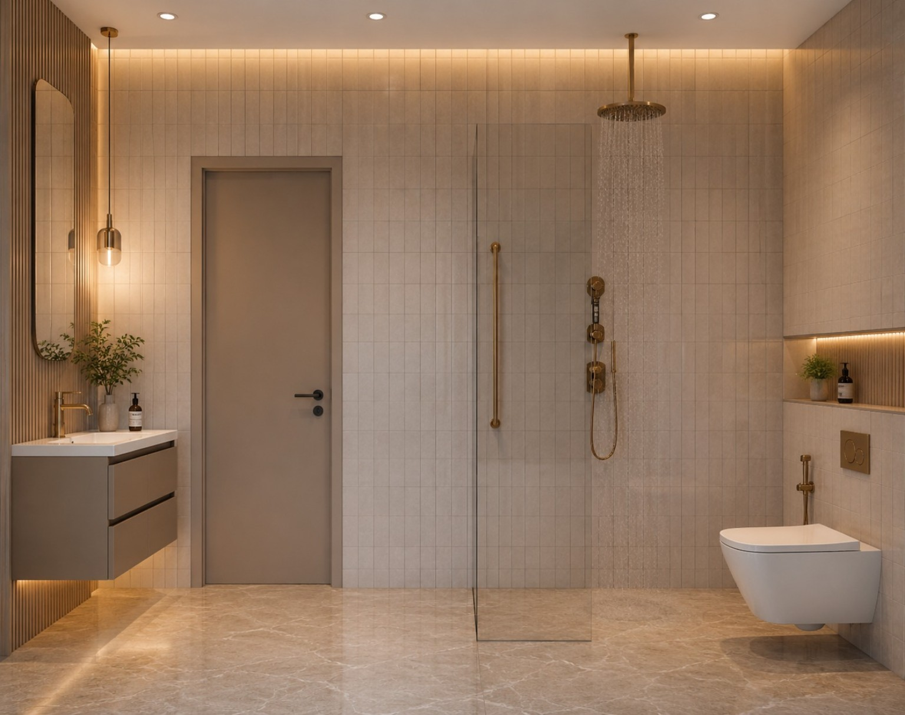
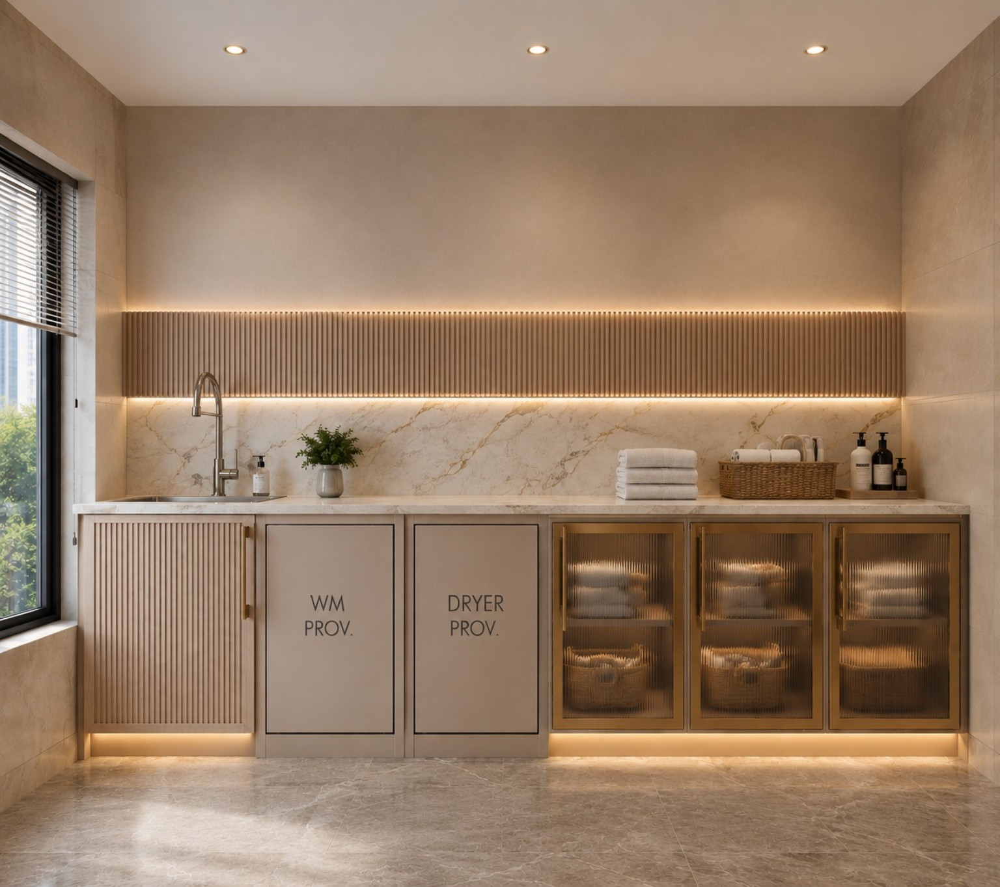
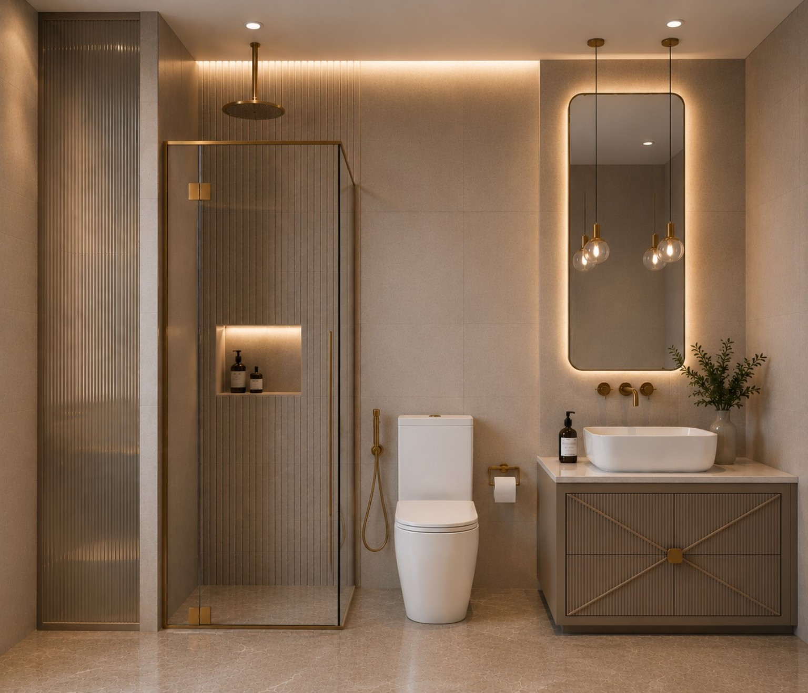
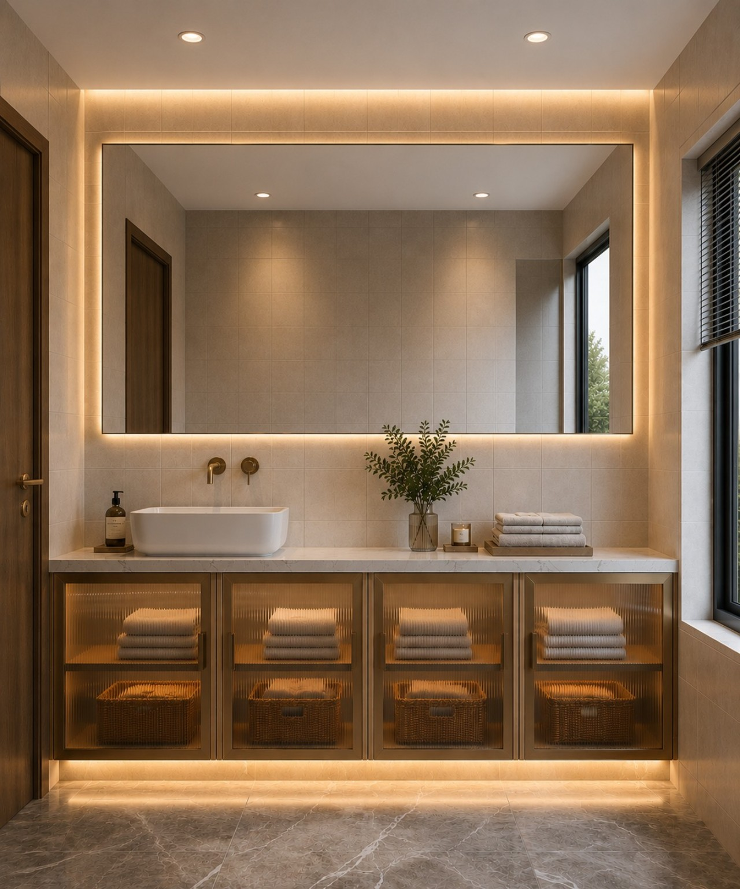
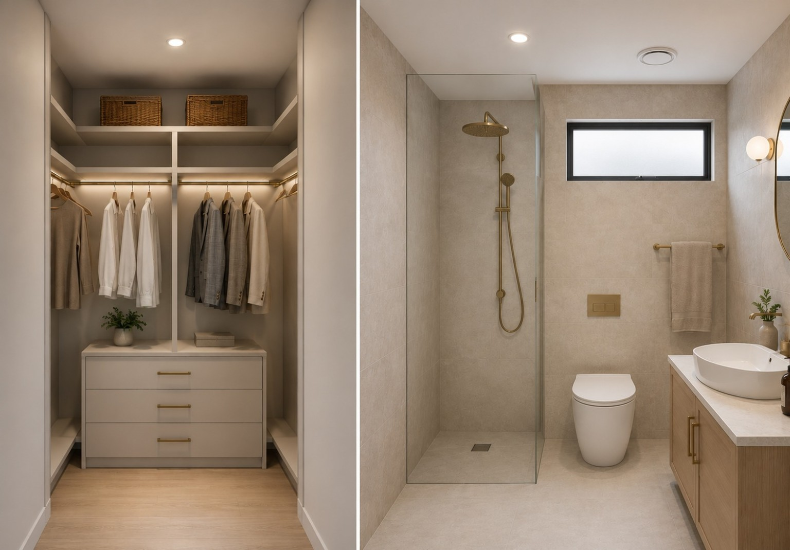

New homeowners
You have the keys, the floor plan and a hundred decisions to make.

INTERIOR DESIGN & CONSULTATION
Professional interior design and space planning for Indian homes — from focused consultations to complete design, with the freedom to choose who executes it.
Online across India · New homes & renovations
REAL TRANSFORMATIONS
Drag the slider to move from a dated space toward a more considered, functional interior.

Drag the line to see the transformation ← →
START WITH CLARITY
Send us the room, floor plan or problem you're struggling with. We'll understand what you need and point you toward the right level of design support.
Ideal for homeowners who need help with layout, storage, furniture placement, materials or a second opinion before spending.
Tell Us About My Space →WHO THIS IS FOR
You don't need to have everything figured out before speaking to a designer.
You have the keys, the floor plan and a hundred decisions to make.
You want a better layout, storage and material direction before work begins.
You want experienced design thinking without managing every decision yourself.
A DIFFERENT WAY TO DESIGN A HOME
A good interior should look right, feel comfortable and make everyday life easier. We focus on the decisions behind the finished space: planning, storage, light, movement, materials and the details that make a room work.
You get professional design thinking without giving up control of the execution.

A CLOSER LOOK
A well-planned utility can make everyday routines easier. Here, cabinetry keeps the appliances integrated, open shelving keeps essentials accessible and the work surface stays visually calm.
Explore more design ideas →WHAT WE HELP WITH
Not every home needs the same level of support. Choose the depth of design help that fits your project.
Talk through layout, storage, materials, lighting and the practical decisions that matter in your space.
Discuss your space →Turn measurements and requirements into a more functional plan for kitchens, bedrooms, bathrooms, living areas and utilities.
Plan my space →Develop the design direction, layouts, finishes, visualisation and documentation needed to take the idea forward.
Start a design →Receive a clear design package and direction so your chosen contractor, carpenter or vendor can execute it.
Ask about handover →A FOCUSED START
For homeowners who don't need a full design engagement yet, a focused consultation can help turn uncertainty into a practical direction.
THE BEST TIME TO FIX A DESIGN DECISION IS BEFORE IT BECOMES A COSTLY ONE.
Talk to an Interior DesignerSELECTED INTERIOR WORK
These spaces show the kind of decisions that shape an interior: cabinetry, storage, lighting, material selection and the relationship between everyday functions.


DESIGN IDEAS
Use these visual examples to think through rooms, materials and planning decisions before you commit.
01 / KITCHEN
Use timber to add warmth, stone for visual weight and focused lighting to bring depth to cabinetry and display storage.

02 / BATHROOM
Backlit mirrors, warm metal fittings and textured storage can make a functional bathroom feel calm and considered.
03 / SHOWER ZONE
Consistent finishes, restrained hardware and focused lighting can make a compact bathroom feel more spacious.
Keep frequently used items accessible while using tall cabinetry and integrated appliances to reduce visual clutter.
Plan appliances, worktop, cleaning supplies and storage together so the room supports the routine.

Combine general lighting with focused illumination around the vanity for a more useful and comfortable space.

When storage and bathroom zones sit together, plan circulation, access and finishes as one experience.
Timber brings warmth while stone adds weight and durability. Keep surrounding surfaces restrained so the materials can read clearly.
Ribbed or fluted glass can soften storage while allowing light to pass through and keeping the composition visually lighter.
Warm metal hardware and focused lighting can add character without turning the room into a collection of unrelated accents.
BEFORE YOU START
The best-looking room still needs to work on an ordinary Tuesday.
A NOTE FROM SAYALI
“I want every design decision to have a reason, from the way a room flows to the way it feels.”
Sayali S. Kudve
Founder, Artisan Mate
A CLOSER LOOK
Look closely at storage, lighting, cabinetry and material choices. They often make the biggest difference to everyday comfort.
THE DESIGN LIBRARY
Simple guides for Indian homeowners, from first layout questions to materials, storage and current design choices.
KITCHEN PLANNING
Think through storage, appliance placement, prep space, display and lighting before choosing finishes.
Read the guide →STORAGE
Use wardrobes, utility cabinetry, open shelves and hidden storage based on what you actually keep.
Read the guide →MATERIALS
Balance timber, stone, textured glass, metal and lighting so the room feels layered rather than busy.
Read the guide →KITCHEN PLANNING
Start by mapping the refrigerator, cooking zone, sink, appliances and the things you reach for every day. Then work out tall storage, open display, worktop space and lighting around that routine.
A kitchen should look considered because it is well planned, not because it hides how you use it.
STORAGE
Built-ins work best when they are designed around real storage needs. Combine closed cabinetry for visual calm with a smaller amount of open shelving for items you want accessible or visible.
Good storage reduces clutter without making the room feel like a wall of cabinets.
MATERIALS + LIGHT
Timber, stone, fluted glass, warm metal and indirect lighting can work together beautifully when one material leads and the others support it. Repeat a finish in more than one place so the room feels connected.
The goal is not more materials. It is a better relationship between the few you choose.
ABOUT ARTISAN MATE
Artisan Mate is an interior design and consultation practice led by architect Sayali S. Kudve. The approach is thoughtful, practical and collaborative, with attention to how a home is planned, used, experienced and then executed by your chosen team.
FAQs
No. Artisan Mate focuses on interior design and consultation. You can execute through a contractor, carpenter, modular company or other vendors of your choice.
Yes. The service is designed to work remotely, so homeowners across India can discuss a project and share plans, measurements, photos and videos online.
Yes. You keep your preferred execution team while the design is developed separately. The agreed design package is then handed over for execution.
No. The approach can work for new apartments, independent homes, renovations and individual spaces that need better planning or a fresh design direction.
The exact deliverables depend on the scope you choose. We confirm what is included before the project begins.
HOW IT WORKS
No pressure to commit to a full interior project. We first understand the home and the problem you're trying to solve.
Share your city, property type, requirement and what isn't working.
We review the information and discuss the right design scope for you.
Start with a consultation, space planning or complete interior design.
Move forward with a plan you can execute with your preferred team.
START A CONVERSATION
Tell us what you're planning, where you're based and what kind of help you need. We'll get back to you about the right consultation or design scope. You can also send your floor plan, room photos or measurements after we connect.
Serving homeowners across India • Design & consultation only • Execution by your chosen team
Prefer WhatsApp? Start there →